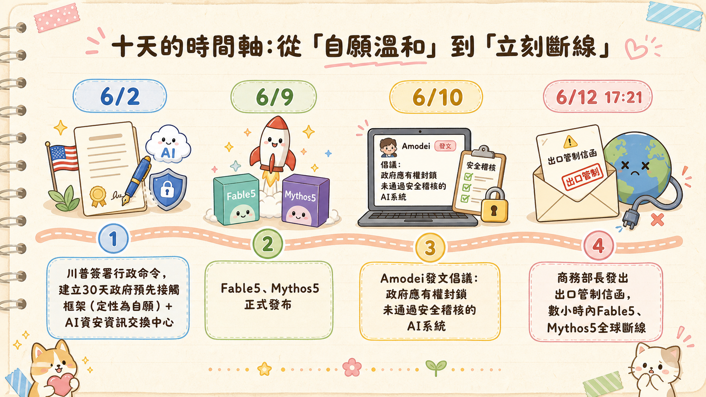
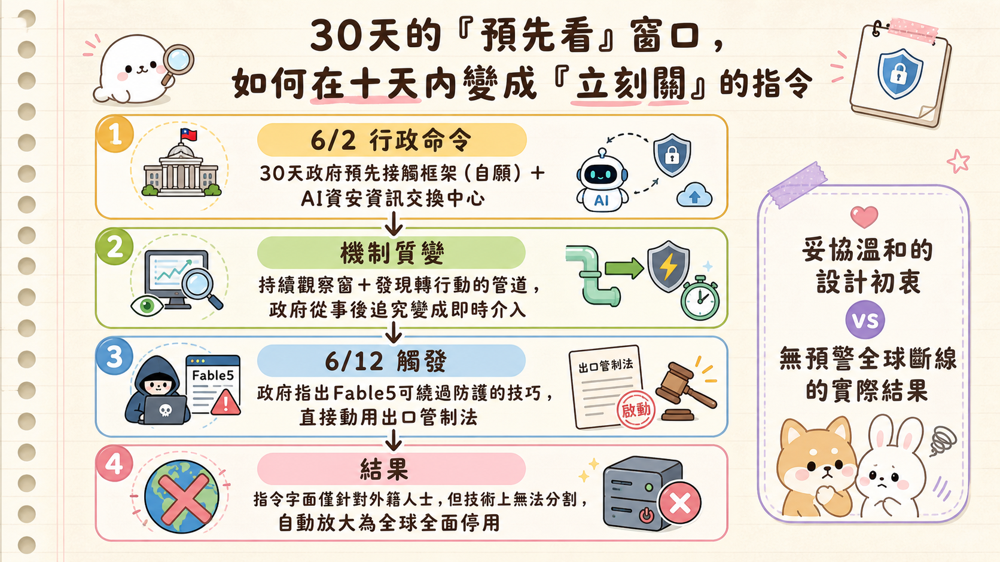
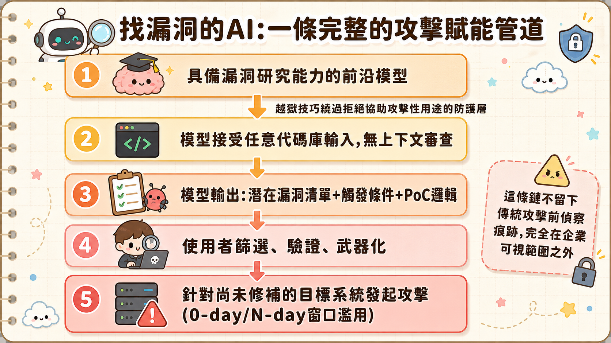

摘要
2026年6月12日傍晚，美國商務部以國家安全為由，向Anthropic發出出口管制指令，要求終止外籍人士對其兩款旗艦模型Fable 5與Mythos 5的存取權限；由於技術與營運上無法區隔使用者國籍，Anthropic在數小時內將此指令擴大為對全球所有使用者的全面停用——這是史上第一次，一家領先AI公司因聯邦政府的直接介入，將已大規模商用的模型下線（Anthropic官方聲明、NBC News）。
這起事件並非孤立發生。十天前的6月2日，川普簽署「推動先進人工智慧創新與安全」行政命令，建立了文字上定性為「自願」的「新模型發布前30天政府預先接觸」框架，並指示成立「AI網路安全資訊交換中心」（經濟日報/UDN、白宮原始行政命令）。本報告主張：6月12日的下架行動，正是這個十天前才正式啟用的常設機制，第一次產生實質介入結果——而觸發這次介入的，是一家競爭對手向政府提出的口頭指控，其所依據的「政府應有權封鎖不安全AI系統」邏輯，正是Anthropic執行長兩天前才公開倡議的權力（Axios、SiliconANGLE）。
本報告分為四個部分：前言以敘事方式梳理事件發生前後的完整時間軸（6月2日行政命令→6月9-10日新模型發布與Amodei政策倡議→6月12日下架）；第一部分（導讀）解析「政策機制如何從『自願溫和』演變成『立即斷線』」的因果鏈，以及Anthropic「安全優先」品牌定位與政府監管行動之間的張力，並揭露這場危機背後的監管迴路；第二部分（深度分析）從資安治理（GRC）與攻防一體視角，拆解這起事件對企業AI供應鏈風險管理的結構性衝擊，包含威脅情報來源質變、自願框架的強制化、以及監管迴路風險三項新發現；第三部分（觀察）提出一個更宏觀的地緣政治觀察——這很可能不是最後一次出口管制行動，而是美國國家安全框架重新盤整的開端，其精神與中國的網路防火牆邏輯有微妙的鏡像關係。
前言：三篇報導，一條十天的時間軸
要理解6月12日傍晚發生的事，必須先把時間倒回十天前。
6月2日，白宮簽署了一份命運多舛的行政命令。根據經濟日報/UDN的報導（2026-06-04），這份「推動先進人工智慧創新與安全」行政命令原訂5月21日發布，卻在正式公開前數小時被川普擱置；舊版草案要求科技公司在新模型發布前90天讓政府提早接觸測試，業界遊說後，最終折衷為30天。命令同時指示財政部與AI產業、基礎建設營運商組成「AI網路安全資訊交換中心」，協調偵查軟體安全漏洞並修復弱點。報導中提到，矽谷創投家David Sacks曾致電川普警告，這類措施會「拖慢創新速度，削弱美國在AI競賽中的競爭力」——這份命令在誕生時，被定調為一個在「監管」與「創新」之間妥協、溫和的安排。同篇報導也提到，Anthropic正處於衝刺IPO、並擴大開放其Mythos資安模型的階段。值得特別注意的是，根據白宮原始行政命令文本與官方Fact Sheet，這套「30天預先接觸框架」與「AI網路安全資訊交換中心」在文字上明確定性為自願性（voluntary）機制，且後者的協作對象不只限於AI公司，還明確涵蓋關鍵基礎設施營運商。這個「自願」的字面定性，將在十天後變得格外諷刺。
6月9日，Fable 5與Mythos 5正式發布；隔天，Anthropic執行長公開倡議了一個會在兩天後反咬自己一口的監管權力。根據SiliconANGLE與Tech Times的報導，6月10日，Dario Amodei發表文章主張仿效FAA模式，要求前沿模型接受強制第三方稽核，且政府應有權力封鎖未通過安全稽核的AI系統。這篇文章發表時，距離6月2日行政命令簽署僅一週，距離Fable 5與Mythos 5上線僅一天。
十天後的6月12日下午5點21分（東岸時間），這份命令所建立的機制，第一次被實際動用。根據NBC News的報導（2026-06-12），美國商務部長Howard Lutnick向Anthropic執行長Dario Amodei發出一封出口管制指令信函，指令的字面範圍是要求終止「外籍人士」對Fable 5與Mythos 5的存取。政府在信中指出一項可繞過Fable 5部分安全防護的特定技術手法。然而，由於Anthropic的服務是全球部署、帳號體系跨國，技術與營運上幾乎無法單獨區隔「外籍使用者」，於是這份指令在傳遞到產品端時，自動放大為對全球所有使用者的全面停用。NBC的報導將此定性為：這是首次有領先AI公司因聯邦政府的直接介入，將已公開部署的商用模型下線。但這項指令究竟從何而來？根據Axios的報導，真正的觸發點並非政府自身的測試或審查，而是另一家AI公司向政府聲稱自己成功越獄了Mythos——政府據此先向Anthropic施壓要求暫緩發布未果，才升級為這封出口管制信函。
幾乎在同一時間，Anthropic發出了官方聲明。根據Anthropic的聲明（2026-06-12），公司表示將遵守這份以國家安全為由發出的指令，立即停止所有用戶對Fable 5、Mythos 5的存取（其他模型不受影響）。但聲明同時清楚表達了不同意：Anthropic主張已投入數千小時的紅隊測試，合作對象包括美國政府機構、英國AI安全研究所與第三方組織；政府所指出的「越獄」漏洞——透過要求模型分析特定代碼庫來識別軟體缺陷的潛在濫用方式——在業界廣泛存在，包括OpenAI的GPT-5.5也有同樣的弱點。Anthropic強調「完美的越獄抵抗目前對任何模型供應商都不可能」，公司採取的是「防禦縱深」策略，並對使用者受到的影響表示歉意，稱正在努力盡快恢復存取。根據CNBC的報導，Anthropic在聲明之外，將此事定調為一場可能源於誤解的爭議——公司表示正在審視政府所依據的報告，並指出政府目前僅提供了口頭層級的證據，尚未經過獨立驗證。

把這四則事實疊在一起看，會浮現一條比單純「政策因果」更尖銳的因果線：一份十天前被定調為「自願、溫和、妥協」的監管機制，在第一次被使用時，產生的結果卻是「無預警、無聽證、數小時內全球斷線」；而觸發這個機制的，既不是政府主動稽核，也不是公開的安全研究，而是一家競爭對手向政府提出的口頭指控——這項指控所依據的「政府可封鎖不安全AI系統」邏輯，恰恰是Anthropic自家執行長兩天前才公開倡議的權力。下面的導讀部分，將深入拆解這個落差究竟是如何發生的。
第一部分・導讀：當「安全承諾」變成監管開關
沒有當機，沒有公告期，使用者一夜之間發現模型消失了
如果你的產品建立在某個AI模型之上，你大概會擔心幾種風險：API漲價、服務中斷、競品推出更強的模型。但2026年6月12日傍晚發生的事，不在任何一份風險清單上。如前言所述，美國商務部長在下午5點21分寄出一封信，數小時內，Anthropic最強的兩個模型——Fable 5與Mythos 5——對全球所有使用者同步斷線（NBC News）。不是技術故障，不是商業決策，是一份來自政府的出口管制指令。
這不是某個小型實驗性模型的下架，而是已經部署給數億使用者的旗艦產品。對開發者來說，這代表一件事：你的AI供應商即使做對了所有事，模型依然可能在沒有預告的情況下，因為一個你完全無法影響的決策，從你的產品中消失。
而真正值得追問的，不是「為什麼這次會發生」，而是「這個開關，究竟是什麼時候被裝上的」。
「我們做了數千小時測試」為什麼擋不住一封信
過去幾年，整個前沿AI產業建立信任的方式幾乎是同一套劇本：大量的內部紅隊測試、與第三方安全機構合作、發布詳盡的模型安全報告，然後告訴外界——我們已經檢查過了，這是安全的。Anthropic在這套劇本裡向來扮演最謹慎的角色，這次事件中，他們也確實搬出了這套說法：數千小時的紅隊測試，合作對象包括美國政府機構與英國AI安全研究所（Anthropic官方聲明）。
但這些都沒有用。一個由政府單方面識別出的、可繞過部分防護的技術手法，就足以讓商務部長簽出一封信，而這封信的法律位階，直接蓋過了Anthropic所有的內部安全認證。
這揭露了一個一直存在卻很少被攤開講的事實：所謂的「我們做過完整的安全測試」，從來都不是最終的守門機制，它只是公司用來自我證明、爭取社會信任的敘事素材。真正的最終守門權，一直握在政府手裡——只是過去這個權力處於休眠狀態，從沒被正式行使過。2026年6月2日簽署的那份行政命令（經濟日報/UDN），做的事不是「新增」一個監管權力，而是把這個原本沉睡、模糊、未被制度化的權力，正式接上電源、裝上開關、放在隨手可按的位置。
十天之後，這個開關第一次被按下。
30天的「預先看」窗口，如何在十天內變成「立刻關」的指令
把6月2日的行政命令拆開來看，核心其實是兩件很樸素的事：第一，新模型發布前30天，公司要自願讓政府先接觸、先測試；第二，成立一個資安資訊交換中心，負責協調發現軟體漏洞並修復（經濟日報/UDN）。聽起來像是「政府想先看一眼新玩具」，加上一個「漏洞通報窗口」。這份命令本身的措辭，甚至帶著妥協的痕跡——原本草案要求提前90天，業界遊說後砍到30天，顯示這套機制在誕生時，被框定為一個「溫和、平衡創新與安全」的安排。
但機制一旦存在，它的用途就不再由提案者單方面定義。「提早接觸新模型」本質上等於政府獲得了一個持續性的、制度化的觀察窗；「漏洞通報協調中心」本質上是一條政府可以隨時把「發現」轉換成「行動」的管道。這兩件事合在一起，等於把政府從「事後追究」的角色，轉成「即時介入」的角色。
6月12日發生的事，正是這條管道第一次被使用、且是以最重的方式被使用：政府識別出Fable 5存在一項可繞過部分安全防護的技巧；商務部沒有走「建議」或「協商」的路線，而是直接動用出口管制——一套原本用來限制敏感技術、軍民兩用設備流向特定對象的法律工具——將其套用在一個聊天機器人的存取權限上。指令的字面範圍其實很窄，只針對「外籍人士」的存取；但Anthropic的回應揭露了另一層現實：在一個全球部署、帳號體系跨國的商用服務裡，「只封鎖外籍使用者」在技術與營運上幾乎不可行，結果就是，一個原本範圍有限的指令，在傳遞到產品端的那一刻，自動放大成「全球全面停用」（NBC News）。
於是，一份十天前還被描述成「平衡創新與安全」的行政命令，在第一次被實際使用時，產生的結果是：一個服務數億用戶的商用AI模型，在數小時內，於全球範圍內被迫離線。中間沒有聽證，沒有緩衝期，只有一封信和一個時間戳。

「我們最重視安全」這句話，正在變成可以被拿來對付自己的籌碼
這裡有一個值得停下來想的矛盾。Anthropic長期以來的市場定位，幾乎就是「我們是那個把AI安全當成核心使命的公司」——這既是價值主張，也是用來與競爭對手做出區隔的品牌資產：我們更謹慎、我們更透明、我們甚至主動支持外部監督。
但當監督真的開始行使實質權力時，一家長期公開宣稱「我們歡迎、甚至需要外部監督」的公司，幾乎沒有立場去抵抗——抵抗本身就會打破自己過去幾年建立的敘事。於是事件中我們看到的畫面是：Anthropic一邊強調自己不同意這個判斷（指出這個漏洞其實是業界普遍現象，連競品的旗艦模型如GPT-5.5也存在同樣弱點，並表示「對任何模型供應商來說，完美的越獄防禦目前都不可能」），一邊還是在數小時內完全配合，把模型下架，並向用戶致歉（Anthropic官方聲明）。
換個角度看這件事：如果這個漏洞真的是「業界普遍存在」，那麼政府選擇在這個時間點、針對這家公司、用這麼重的工具出手，它所傳達的訊息就不只是「修補一個技術缺陷」，更像是一次能力展示——選擇一個最不會、也最沒有立場強烈反彈的對象，來證明這套新機制「真的可以被用、而且可以用得很快、很重」。對整個產業而言，這比修補一個漏洞本身，訊息量大得多：它示範了「即使是最強調安全、配合度最高的公司，也可能在數小時內被全面叫停」。
而時間點本身也耐人尋味。這起事件發生在Anthropic積極推進上市計畫、同時擴大開放其資安相關模型的階段——也就是公司在財務與市場聲量上最敏感的時刻（經濟日報/UDN）。同一個月初，當行政命令的草案被討論時，矽谷的聲音是「監管會拖慢創新、削弱美國的AI競爭力」；不到兩週後，這套被宣傳為「平衡、溫和」的機制，第一次被使用的方式，卻是以最不溫和的形式，衝擊了一家身處關鍵商業節點的領先公司。政策說辭與機制實際運作之間的落差，在這短短十天裡被壓縮到清晰可見。
如果故事只停在這裡，結論還能算是「一家謹慎配合的公司，被一套機制以最重的方式對待」。但兩個後續曝光的細節，把這個矛盾推向了更尖銳的層次。第一，根據Axios的報導，這次出口管制行動的起點，並非政府自己的測試或主動稽核，而是另一家AI公司向政府聲稱自己成功越獄了Mythos——一個由市場競爭對手提出、且僅止於口頭層級的指控（CNBC），就足以啟動這套原本被定性為「自願」的機制裡最重的一個環節。第二，也更具諷刺意味的：就在Fable 5與Mythos 5上線後一天的6月10日，Amodei本人公開倡議「政府應有權力封鎖未通過安全稽核的AI系統」（SiliconANGLE、Tech Times）——兩天後，政府正是用這套邏輯，封鎖了他自己公司的模型。Amodei隨後將這次封鎖定調為「報復性且懲罰性的」行動，並將其放進與政府摩擦加劇的敘事中（Yahoo News、AOL）。一家十天前還在公開倡議「政府應有權封鎖危險AI系統」的公司，十天後成為這套邏輯第一個被實際套用的對象，而其創辦人的反應，從「我們不同意，但配合」，演變成「這是報復」——這已經不只是「安全承諾變成籌碼」，而是倡議者親手把武器交給了對手，再被這把武器指向自己。
對所有建立在前沿模型上的人來說，這代表一種新的依賴風險
這起事件最終留下的，不是「Fable 5和Mythos 5什麼時候恢復」這個短期問題，而是一個結構性的改變：「政府可以基於國家安全理由，在沒有事先通知的情況下，讓一個已大規模商用的AI模型在數小時內全面斷線」——這件事，從一個理論上的可能性，變成了一個有真實時間戳、有真實案例的既成事實。
對於把產品建立在任何前沿AI模型之上的團隊，這意味著風險清單上需要新增一個項目，而且這個項目跟過去熟悉的「服務中斷」「漲價」「模型棄用」都不一樣：它不取決於供應商的技術能力或商業意願，而取決於一個你完全無法觀察、也無法事先評估的政治與國安判斷時程。越是被大力行銷為「最強」「最前沿」「最具能力突破性」的模型，某種意義上反而越容易成為這類審查機制最先注意到的對象——因為「能力越強」與「潛在風險越大」在政策語言裡，本來就是同一句話的兩種說法。
更重要的是，6月2日的行政命令所建立的，不是一次性的審查事件，而是一個常設的、持續運作的觀察與通報管道。6月12日只是這條管道第一次產生的結果，而不是最後一次。下一部分的深度分析，將從企業資安治理的角度，具體拆解這個結構性風險該如何被量化與管理。
第二部分・深度分析：攻防一體與GRC結構性衝擊
表面是一個漏洞，底下是四層同時發生的位移
承接第一部分的脈絡：這起事件的本質，不是「Fable 5有一個漏洞」這麼簡單的技術問題。把鏡頭拉遠一點看，會發現有四個層面同時發生了位移，而且每一層位移，都比表面上的「下架一個模型」更難復原：
- 攻擊面層面：被標的的能力——「讓AI模型分析代碼庫以找出軟體缺陷」——本質上是一種雙重用途的自動化漏洞研究能力，其風險不在於模型本身被攻破，而在於模型被當作「漏洞發現的力量倍增器」交給惡意行為者使用（Anthropic官方聲明）。
- 治理層面：政府選擇用出口管制法（而非AI專屬監管框架）來處理這個問題，等於把「AI模型存取權」重新定性為「受控技術出口」——這個法律工具的特性是二元、不透明、可立即執行，與AI安全社群慣用的「風險評估、分級、漸進緩解」邏輯完全不相容。
- 企業風險管理層面：這宣告了一個新的風險類別正式落地——監管驅動的可用性風險（Regulation-Driven Availability Risk），其觸發條件與技術嚴重度脫鉤，任何依賴前沿AI模型的企業，風險矩陣都需要重新校準。
- 情報與監管動態層面：這次事件的觸發鏈，揭露了三個新的風險訊號類別——競爭對手向監管機關提出的口頭指控可直接觸發強制行動、「自願性」政府協作框架本身就是強制行動的入口、以及公開倡議監管權力的公司，可能成為該權力第一個被套用的對象。這三個訊號目前完全不在傳統供應鏈風險評估的範疇內。
這四層位移，彼此並不是獨立的四個問題，而是一條連鎖反應：攻擊面定義了「什麼能力是敏感的」，治理層面決定了「誰來判斷、用什麼速度判斷」，企業風險管理層面承接了判斷後的衝擊，而情報與監管動態層面，則揭露了這整條鏈最容易被忽略的入口。下面就從最底層的攻擊面開始拆解。
1. 攻擊面分析：「找漏洞的AI」代表什麼樣的雙重用途風險
Fable 5被指出的問題，是「透過要求模型分析特定代碼庫來識別軟體缺陷」的能力可被繞過安全防護觸發（Anthropic官方聲明）。從紅隊視角拆解，這個能力鏈本身就是一條完整的攻擊賦能管道（enablement chain），即使模型本身沒有被「入侵」：
具備漏洞研究能力的前沿模型
│
▼ (越獄技巧 → 繞過「拒絕協助攻擊性用途」的防護層)
模型在無上下文審查的情況下，接受任意代碼庫輸入
│
▼
模型輸出：潛在漏洞清單 + 觸發條件 + (視能力)PoC邏輯
│
▼
使用者篩選、驗證、武器化
│
▼
針對「尚未修補」的目標系統發起攻擊 (0-day / N-day 窗口濫用)這條鏈路的關鍵特徵是：它把傳統上需要資深安全研究員數週到數月才能完成的漏洞研究工作，壓縮成「上傳代碼庫 + 一段越獄提示詞」的規模化操作。這正是AI安全社群長期討論的「uplift風險」（能力提升風險）在網路安全領域的具體案例——模型不需要自己會「打」，只要能大幅降低漏洞發現的門檻與成本，就足以改變攻防的成本結構。
對防禦者而言，這個風險的可怕之處在於它不留下傳統的「攻擊前偵察」痕跡——攻擊者不需要對目標系統做主動掃描（這通常會被NIDS/WAF捕捉到），漏洞研究發生在AI供應商的推論基礎設施上，完全在目標企業的可視範圍之外。

問題是，當這樣一條雙重用途的能力鏈被政府盯上時，接下來要用哪一套規則來判斷「該怎麼處理」？這正是第二層位移要回答的。
2. 治理框架評估：用出口管制法處理AI安全爭議的結構性問題
出口管制法（此處的法律框架本質上是對「技術」跨境流動的管制，適用對象傳統上是加密技術、軍民兩用設備、特定軟體）與AI專屬監管框架（如風險分級、模型卡片揭露、第三方稽核）在設計哲學上是兩種完全不同的治理邏輯：
| 維度 | 出口管制法 | AI專屬風險治理框架（如NIST AI RMF） |
|---|---|---|
| 判斷依據 | 技術是否落入受控清單（ECCN等） | 風險等級評估（可能性 × 影響） |
| 決策模式 | 二元（允許/禁止） | 分級（可接受/需緩解/不可接受） |
| 透明度 | 通常涉及國安資訊，不公開判斷依據 | 要求公開模型卡、評估方法論 |
| 執行速度 | 可立即生效（行政命令性質） | 通常有公眾意見期、緩衝期 |
| 申訴/緩解路徑 | 有限，且涉及國安豁免 | 通常允許廠商提出緩解措施再評估 |
當政府選擇用第一套邏輯處理第二套邏輯該管的問題時，結構性的問題在於：「找到一個可繞過的越獄技巧」這個發現，在AI風險治理框架下應該觸發的是「分級評估 + 緩解措施驗證」流程；但在出口管制框架下，它直接觸發的是「存取權終止」。Anthropic所主張的「該漏洞業界普遍存在、防禦縱深策略已將風險降至合理範圍」這套論證（Anthropic官方聲明），在AI風險治理框架下是有效的緩解證據；但在出口管制框架下，這類論證沒有對應的法律地位——出口管制不問「風險是否已被合理緩解」，只問「該技術是否被列為受控」。
對企業的供應鏈風險評估意味著什麼：6月2日建立的「30天預先接觸框架」與「AI網路安全資訊交換中心」（經濟日報/UDN），本質上是政府在AI供應鏈中插入了一個常設的、單向的資訊獲取節點。企業在做第三方AI依賴風險評估（third-party AI dependency risk）時，過去主要評估的是「供應商的技術可靠性、資料治理、合規認證」；從這個事件之後，「供應商的產品是否落在政府可透過此管道直接介入的範圍內」必須成為一個獨立的風險維度——而且這個維度完全不受供應商的技術品質或合規投入影響，即使供應商做到業界最高標準的紅隊測試（如Anthropic所主張），依然無法降低這個風險。
當「可能性 × 影響」的計算公式被這樣打亂之後，企業原本仰賴的防禦縱深邏輯，還站得住腳嗎？
3. 防禦縱深 vs 政府零容忍：風險矩陣需要怎麼重新校準
「防禦縱深（defense-in-depth）、無法做到完美防護」是資安界的標準共識——任何風險矩陣的設計都建立在「殘餘風險（residual risk）是可接受的，只要可能性與影響都已被壓低到組織風險胃納範圍內」這個前提上。
這次事件示範的是：對於受到此類監管框架覆蓋的前沿AI供應商，「可能性 × 影響」這個傳統公式中的「影響」軸，出現了一個與技術嚴重度脫鉤的全新分支。
具體來說，過去評估一個漏洞對「服務可用性」的影響，邏輯是：
漏洞嚴重度高 → 攻擊者利用 → 服務中斷/資料外洩 → 可用性影響而這次事件示範的新路徑是：
漏洞被政府發現 (嚴重度可能不高，且業界普遍存在)
→ 出口管制程序啟動 (不評估「業界普遍性」或「緩解措施有效性」)
→ 全域存取終止指令
→ 可用性影響 = 100% (無預警、無漸進降級)對企業資安團隊規劃AI供應商風險矩陣的建議校準：
- 新增「監管觸發可用性風險（Regulatory Kill-Switch Exposure）」作為獨立評估軸，與「技術可靠性」並列，且不能用技術可靠性的高分去抵銷這個軸的風險分數——兩者在這次事件中被證明是不相關的變數。
- 不要用CVSS或類似的技術嚴重度評分，作為「此供應商被監管介入機率」的代理指標。一個CVSS中等的漏洞，只要落在政府的國安關注範圍內（例如涉及「自動化漏洞發現」這類雙重用途能力），其觸發監管行動的機率可能遠高於一個CVSS嚴重但純粹影響資料機密性的漏洞。
- 「業界普遍存在的風險」不再是降低供應商風險評分的有效理由。過去企業常用「這個風險所有同類供應商都有，不是特定供應商的劣勢」來做相對評分；但這次事件顯示，監管行動可能選擇性地針對特定供應商，即使風險本身是行業共性問題——這意味著「供應商在政策/聲量上的曝光程度」本身就是一個風險因子。
4. GRC新意涵：情報質變、框架強制化與監管迴路風險
事件發生後續曝光的細節，並未推翻前三個角度的核心結論，但揭露了三個更精細的結構性問題，直接影響企業在「前沿AI供應商風險評估」中應該追蹤的訊號種類。
4.1 威脅情報來源的質變：當「競爭對手的安全聲明」變成監管武器
根據Axios的報導，這次出口管制行動的起點，並非政府自身的測試或公開揭露的研究，而是另一家AI公司向政府聲稱自己成功越獄了Mythos。政府據此向Anthropic施壓要求暫緩發布未果，才升級為出口管制信函。Anthropic後續表示，其審視的是政府所依據的報告，且認為政府目前僅提供了口頭層級的證據（CNBC）。值得注意的是，目前所有公開報導都沒有交代政府如何驗證這家競爭對手說法的真實性——報導只呈現了「政府基於這個口頭指控採取行動」這個結果，提出指控的競爭對手身分也未被公開，驗證過程本身完全是黑箱。
把這條線拉直來看，傳統的漏洞情資來源，通常分三類：內部紅隊、外部研究者的負責任揭露（coordinated disclosure）、以及被野外利用後才被偵測到的威脅情資。這次事件示範了第四種來源：競爭對手向監管機關提出的能力聲明，且這個聲明不需要經過獨立驗證、不需要走負責任揭露流程，就足以觸發具有法律效力的存取終止指令。
| 視角 | 內容 |
|---|---|
| 威脅來源視角 | 漏洞/能力主張的提出者是市場競爭對手，提出管道是政府監管渠道（而非CVD/bug bounty），驗證標準低於傳統資安揭露慣例（口頭證據即可觸發行政行動） |
| 監控視角 | 企業在追蹤「主要AI供應商風險」時，應將「該供應商與其主要競爭對手之間，是否同時參與同一個政府資安資訊交換中心（clearinghouse）」納入監控項目——這代表雙方互相觸發監管行動的結構性管道已經存在並且常設化 |
| 緩解視角 | 對企業而言，無法緩解「供應商被競爭對手舉報」這個風險本身，但可以透過供應商分散化降低單一舉報事件對自身業務的衝擊半徑——避免核心工作流100%綁定在單一供應商的單一旗艦模型上 |
| 治理視角 | 在做供應商盡職調查時，新增問題：「貴公司的競爭對手是否曾透過官方資安資訊交換管道，對貴公司的模型提出能力/安全性主張？該主張的驗證狀態為何？」——這個問題過去不存在於任何標準TPRM問卷中 |
4.2 「自願框架」的強制化：參與本身就是風險敞口
根據白宮原始行政命令與官方Fact Sheet，「30天政府預先接觸框架」與「AI資安資訊交換中心」在文字上都被定性為自願性（voluntary）機制，且後者的協作對象明確包含關鍵基礎設施營運商，不限於AI公司本身。
但6月12日的事件顯示：一旦廠商加入這個「自願」的資訊交換管道，該管道本身就成為「發現→升級→強制執行」這條鏈路的入口。換句話說，「自願參與資訊分享」與「承擔被即時、強制介入的風險」這兩件事，在制度設計上被文字分開，但在實際運作上是同一個管道的一體兩面——廠商無法只享受「自願框架」帶來的政府合作聲量，卻不暴露於該框架可能升級為強制行動的尾端風險。
對企業GRC團隊的具體意涵：
- 不要把供應商「自願參與政府AI安全框架」單純解讀為正面訊號。這確實顯示供應商配合度高、透明度高，但同時也意味著該供應商的模型「被政府持續觀察、且觀察結果可被快速轉化為強制行動」的管道已經打開——這是一個風險敞口的擴大，即使其初衷與表面條款是善意的。
- 「自願承諾」應被視為「潛在強制義務的前哨（precursor）」，而非終局狀態。在評估供應商的監管風險時，應該問的不是「這個框架現在的條款是什麼」，而是「這個框架建立的資訊管道，未來可以被用來做什麼，而這個用途是否需要廠商或客戶的同意」。本次事件已經提供了答案：不需要。
- 在合約與供應鏈條款設計上，應將「供應商參與了哪些政府自願性AI安全框架」列為動態追蹤項目，而非簽約時的一次性盡職調查項目——因為供應商可能在合約簽署後才加入新的框架，而這會改變既有合作關係的風險輪廓。
4.3 監管迴路風險：當安全倡議者的提案，被用來對付提案者自己
這是三項新事實中，結構上最值得企業GRC與政策團隊警惕的一點。根據SiliconANGLE與Tech Times的報導，Dario Amodei於6月10日（Fable 5發布後一天）發表文章，主張仿效FAA模式，要求前沿模型接受強制第三方稽核，且政府應有權力封鎖未通過安全稽核的AI系統。兩天後，政府正是以「封鎖未通過稽核標準的AI系統」這套邏輯，封鎖了Amodei自己公司的模型。Amodei隨後將此行動定調為「報復性且懲罰性的」，並將其放進與政府更大範圍摩擦的敘事中（Yahoo News、AOL）。
這個時間線揭露的，是一種監管迴路風險（Regulatory Boomerang Risk）：當一家公司公開倡議「監管機關應該擁有某項權力」時，該公司實質上是在為這項權力的正當性背書——一旦該權力被制度化，它的第一個行使對象，完全可能就是倡議者自己，而且倡議者很難在事後說「我支持這項權力存在，但不同意它被用在我身上」，因為這正是該權力被設計來做的事。
對於積極參與AI政策遊說、標準制定、或公開倡議監管框架的企業，這意味著：
- 「形塑監管框架」這個行為本身，應該被視為一種風險創造行為，而不只是風險管理行為。公司可能基於品牌定位、競爭策略或真誠的安全信念而倡導某項監管權力，但一旦該權力被採納，公司對其後續適用範圍與執行時機完全沒有控制權——這與「我們參與制定標準，所以我們比較容易符合標準」的直覺相反。
- 企業在進行政策遊說的內部風控評估時，應該加入一個問題：「如果我們現在倡議的這項監管權力，在未來被以最不利於我們的方式解釋與執行，我們的應變計畫是什麼？」——而不是預設「我們倡議的框架，執行時會對我們友善」。
- 對於評估AI供應商的客戶而言，供應商「公開支持嚴格AI監管」這個事實，不應再被簡化為單一方向的正面訊號（「這家公司很負責任」）。它同時也是一個該供應商可能比同業更早、更直接暴露於監管執行行動的先行指標——因為該供應商已經公開承認、甚至主動呼籲這類權力的正當性，使政府在對其執行時面臨的政治阻力更低。
這三件事合在一起，意味著什麼
三項新事實共同指向同一個結論：在這個新的治理環境裡，「合規」「透明」「主動配合監管」「公開支持安全倡議」這些過去被視為降低風險的行為，其風險效應正在變得雙向化——它們仍能降低「被認定為不負責任行為者」的風險，但同時可能提高「被監管機關選定為執行對象、且執行時面臨較低政治阻力」的風險。企業在建立AI供應商風險評分模型時，需要將這兩種效應分開計算，而不是假設它們永遠同向。
四層位移與三項新事實，描述的都是「為什麼會發生」與「這意味著什麼」。接下來把它們收斂成兩張可以直接用的工具：第一張，是把第1節的攻擊鏈翻譯成偵測規則與治理檢查清單；第二張，是把整起事件對應到企業既有的GRC框架裡。
把這條攻擊鏈，翻譯成一張可以直接用的偵測與治理對照表
| 視角 | 內容 |
|---|---|
| 攻擊視角 | 利用越獄提示詞繞過模型的「拒絕協助攻擊性安全研究」防護層，輸入目標代碼庫，取得自動化漏洞分析結果，用於0-day/N-day窗口的武器化 |
| 偵測視角 | (a) AI供應商端：異常使用模式偵測——大量代碼上傳 + 已知越獄提示詞模板 + 「找漏洞/找缺陷」框架語句的組合，應觸發API濫用告警；(b) 企業端：出站流量中，大型程式碼庫（含.git歷史、私有repo內容）被上傳至外部LLM API端點的DLP告警 |
| 防禦/緩解視角 | (a) 模型層：對「分析代碼庫找缺陷」類請求，在輸出層加入額外的意圖分類與速率限制，而非僅依賴輸入層的越獄防護；(b) 企業層：對內部敏感程式碼建立「禁止外傳至生成式AI服務」的DLP政策，並對例外情況（如已簽約的企業版/私有部署）做白名單管理 |
| 治理視角 | 這類「雙重用途能力 + 越獄可繞過」的風險組合，應被納入供應商盡職調查（vendor due diligence）的標準問題清單——企業應要求AI供應商揭露：該模型是否具備自動化漏洞研究能力、該能力的存取是否分級、是否有針對此能力的專屬監控與異常使用通報機制 |
光是知道「哪裡該裝偵測器」還不夠——這整套風險，終究要被寫進企業既有的治理語言裡，才能真正進入決策流程，而不是停留在資安團隊的內部筆記。
這些位移，該怎麼寫進企業既有的風險框架裡
將這次事件對應到企業常用的GRC框架，可以看到幾個具體的調整點：
- NIST CSF 2.0 — Govern（治理）功能：「供應鏈風險管理」控制項中，過去通常聚焦於資料處理協議、SLA、稽核權。這次事件後，應新增「供應商所處司法管轄區的政府是否具備對該產品的單方面存取終止權」作為供應商風險登記表的必填欄位。
- 第三方風險管理（TPRM）— 持續監控：傳統TPRM多採年度或半年度重新評估週期。但「政府指令導致數小時內全域斷線」這種事件的時間尺度，使得年度週期完全無法提供有意義的預警。建議將「主要AI供應商的監管動態」納入與「資安事件通報」同等級的即時監控範疇（例如訂閱供應商的法規合規公告、政府AI政策追蹤）。
- 業務連續性計畫（BCP）— 情境分類：過去BCP的情境分類通常是「供應商技術故障」「供應商破產/併購」「資料中心區域性中斷」。這次事件提供了一個新的、需要正式納入的情境類別：「供應商因地緣政治/法規行動被迫終止服務，且無預警期」——這個情境的恢復時間目標（RTO）規劃邏輯，與傳統的技術故障情境不同，因為供應商自身也無法控制恢復時程（Anthropic自己也只能表示「正在努力盡快恢復」，Anthropic官方聲明）。
把風險寫進框架之後，真正的問題才浮現：當這件事實際發生在自己身上時，具體要做什麼？
如果你的產品建立在前沿模型上，接下來該做什麼
對於將前沿AI模型嵌入產品或內部工作流程的企業，建議的應變計畫架構如下：
-
建立模型抽象層（Model Abstraction Layer）
- 不要讓核心業務邏輯直接寫死（hardcode）特定模型的API與prompt格式
- 透過LLM gateway/router架構，讓底層模型可在數小時內切換（至少要能切到次選供應商或自建/開源權重模型）
- 定期執行「prompt可移植性測試」——驗證核心功能在切換到備用模型後，輸出品質是否仍在可接受範圍
-
維護一個「冷待命（cold standby）」備援模型
- 不要求備援模型與主力模型能力對等，但要求其不受同一監管管轄範圍/同一供應商風險影響（例如：主力用美國前沿模型API，備援可考慮自託管開源權重模型，或部署在不同司法管轄區的供應商）
- 備援啟動流程應納入年度BCP演練，而非只存在文件上
-
合約層面的調整
- 在供應商合約中，爭取「監管行動通知義務」條款——即使供應商法律上可能無法提供「提前通知」（因為指令本身可能要求立即執行），至少應約定供應商在收到此類指令後第一時間通知客戶的SLA
- 評估資料/工作階段的可攜性條款——確保即使模型存取終止，既有的對話歷程、微調資料、嵌入向量等資產仍可匯出與遷移
-
將此情境納入桌面演練（tabletop exercise）
- 情境設定：「主力AI供應商在無預警情況下，於4小時內全域終止對你產品的API存取，且供應商表示恢復時間未知」
- 演練重點不是「如何說服供應商恢復服務」（這超出企業控制範圍），而是「核心業務流程能否在備援模型/人工流程下，於可接受的服務降級水準內持續運作」
-
建立「監管曝光度」作為供應商選型的長期評估因子
- 在簽署長期合約或建立深度整合前，評估該供應商的產品/模型是否具有容易被定性為「雙重用途」或「國安相關」的能力（例如：自動化程式碼分析、生物/化學資訊處理、關鍵基礎設施模擬等）
- 能力越接近這些敏感領域，該供應商產品被未來類似監管行動覆蓋的機率越高——這應該反映在供應商多元化策略中，而不是事後才發現
依據與先例
以上五點建議並非憑空推論，而是對應既有的風險管理方法論與Anthropic自身的營運紀錄：
- 方法論基礎：這套架構本質上是ISO 31000風險管理框架（風險識別→評估→應對→監控）與供應鏈風險管理（如ISO 28000、ISO 22301業務連續性管理）在「AI供應商依賴」這個新興風險類別上的具體應用。企業不需要發明新的治理工具——需要的是把「AI供應商」正式納入既有的供應鏈風險清冊與BCP情境庫，而這正是多數企業目前缺漏的一步。
- 建議1（模型抽象層）：LLM Gateway/AI Gateway架構在2026年已被視為企業AI治理成熟度的指標之一，「投資抽象層以降低供應商鎖定」是業界普遍方向。
- 建議2、5（冷待命備援、監管曝光度評估）：NIST AI風險管理框架（AI RMF）的「Manage」功能明確涵蓋供應商SLA、模型更新政策與持續監控；美國BIS出口管制框架（AI Diffusion Rule、AI Due Diligence Rule、ECCN 4E091）已將「雙重用途AI能力」列為供應鏈審查項目，方向與建議5一致。
- 建議3（合約條款）：資料可攜性與SLA終止權是現行SaaS合約的標準要素；但「監管行動通知義務」這項具體條款，目前並非業界既有慣例，屬於本報告基於這次事件提出的新建議，尚待市場驗證。
- 建議4（桌面演練）：BCP桌面演練「假設核心供應商不可用」是既有最佳實務，本次事件提供的新增情境是「供應商自身也不知道何時恢復」。
實務先例——不必等到下一次出口管制事件：即使排除這次的監管因素，Anthropic自身過去一年內已出現兩次值得參考的服務品質事件。2025年8月，使用者陸續回報Claude回應品質下降，Anthropic事後調查發現是三個基礎設施錯誤所致，且因評估方法過於寬鬆，花了數週才定位問題；2026年3至4月，Claude Code的輸出品質因三個內部變更（推理降級、快取錯誤、tokenizer迴歸）連續下降50天，且是由外部使用者自行建立監測才被發現，Anthropic內部當時並未察覺。這兩起事件說明：單一供應商依賴的風險，不只來自監管這種極端尾部事件——日常的服務品質波動本身，就足以構成需要備援與演練的理由。建議2與建議4的適用情境，遠比「政府下架模型」更常發生。
第三部分：觀察——這不會是最後一次出口管制
前兩部分聚焦在「這件事為何發生、企業該如何應對」。但若把視角拉到更高的層級，這起事件更值得關注的，其實是它所揭示的方向性：美國正在重新盤整自己的國家安全框架，而6月12日的出口管制行動，很可能只是這個盤整過程中，第一個被公開看見的案例，不會是最後一個。
值得注意的是，這個邏輯與中國的網路防火牆（俗稱「網路萬里長城」）有一種微妙的鏡像關係。中國防火牆管的是「什麼資訊/服務可以進入中國」——它是一種針對「入境流動」的邊界管制。而這次的出口管制指令，管的是「什麼AI能力可以流向境外（或境外使用者）」——它是一種針對「出境流動」的邊界管制。兩者的方向相反，但底層邏輯一致：把數位產品/服務的可用性，綁定到使用者的國籍與所在地，用「國家」這個單位重新劃出一條數位世界的邊界線。當美國也開始用這種方式管理自己最先進的AI模型時，代表「數位疆界」不再是某個特定政治體制的特殊現象，而正在變成大國之間普遍適用的工具。
從這個方向出發，可以推演出幾種值得持續觀察的後續演變：
第一，中國模型可能藉此進一步深入商業環境。當美國最強的模型因為國安考量，存在被無預警下架的風險，企業在做供應商多元化評估時，理性上會被推向「尋找風險特性不同的替代方案」。如果中國的AI模型在能力上持續追近，而其風險特性（不受美國出口管制框架直接約束）恰好與美國模型互補，那麼這次事件客觀上提供了一個敘事缺口——「美國模型也會被你自己的政府關掉」這個事實，削弱了「選擇美國模型才是安全選擇」的預設立場，可能加速部分市場（尤其是不希望被捲入美中對抗的第三方國家與企業）轉向多元採購甚至傾向中國模型的趨勢。
第二，美國可能開始劃定自己的「數位領土」，以類似結盟畫圈圈的方式擴大可信範圍。6月2日行政命令中的「30天預先接觸框架」與「資安資訊交換中心」，在白宮的官方文字裡是針對「自願參與」的廠商與關鍵基礎設施營運商所設計的協作機制，目前看起來只是「美國境內公司、美國政府」之間的雙邊安排。但第二部分4.2節已經指出：這個「自願框架」本身，很可能就是未來「互信圈」的第一個雛形——加入這個資訊交換管道的企業與機構，某種程度上等於進入了「被政府持續觀察、但也被政府優先信任」的候選名單。循著「出口管制」的歷史邏輯（例如過去的技術出口管制名單，往往伴隨「盟邦豁免」「友善國家清單」的設計），完全可以預期下一步會出現：美國與特定盟邦之間，建立「互信AI存取圈」——在這個圈內的國家/企業，可以較完整地使用美國前沿模型，而圈外則面臨愈來愈多的限制與審查。這實質上是把過去「實體軍事/技術同盟」的劃圈邏輯，複製到AI能力的存取權上——數位世界出現了類似「申根區」或「五眼聯盟」的AI存取分級結構。值得留意的是，「自願加入」與「被優先信任」這兩件事，在6月12日的案例裡同樣是一體兩面：加入的管道，既是進入信任圈的入口，也是被即時介入的入口。
第三，國與國的邊界，正在從實體疆界、網路疆界，演變為「產品可用/不可用」的疆界，而這個趨勢只會越來越明顯。過去談「國界」，指的是領土；後來談「網路主權」，指的是資料與流量能否跨境；而這次事件示範的，是「國界」進一步收斂到產品層級——你能不能用某個AI模型，取決於你的國籍、你所在的司法管轄區，以及兩國之間當下的政治氣壓。這意味著，未來企業在做技術選型時，「這個產品/服務在我所在的市場是否可用、是否會因為地緣政治變化而被中斷」將不再是邊緣考量，而會成為與「價格」「效能」同等級的核心評估項目——技術採購決策，將越來越無法與地緣政治脫鉤。
綜合結論
把這些事實串起來看，這起事件講述的其實是一個單一的故事：一份十天前才簽署、被定調為「自願、溫和妥協」的行政命令，在第一次被實際動用時，就以最不溫和的方式——出口管制、無預警、全球範圍、數小時內生效——衝擊了一家以「安全優先」為核心品牌定位的領先AI公司，而這家公司即使主張自己已做到業界最高標準的安全測試，依然無法阻止這個結果。更進一步，觸發這次行動的，是一家競爭對手向政府提出的口頭指控，而行動所依據的「政府應有權封鎖不安全AI系統」邏輯，正是這家公司的創辦人兩天前才公開倡議的權力——「安全承諾變成籌碼」最終演變成「監管迴路」：倡議者親手促成了用來對付自己的那把武器，而其本人的反應也從「不同意但配合」，升級為公開定調此為「報復性且懲罰性」的政府行動。
對企業而言，這起事件把「前沿AI模型依賴」從一個單純的技術選型問題，升級為一個具有獨立地緣政治風險維度的供應鏈依賴——監管驅動的可用性風險，與技術可靠性脫鉤，且目前完全不在任何一家AI公司或任何使用者的控制範圍之內。第二部分提出的風險矩陣校準與應變計畫架構，以及第4節揭露的三個新風險訊號（競爭對手口頭指控可觸發強制行動、「自願框架」即是強制行動的入口、公開倡議監管權力者可能成為該權力的第一個適用對象），是企業在這個新現實下，可以立即著手追蹤的具體項目。
而從更宏觀的視角看，這起事件很可能只是一個開端，而不是終點。美國正在用出口管制這個傳統工具，重新劃定AI能力的「數位疆界」——這個邏輯與其他大國管理數位邊界的方式，在精神上正逐漸趨同。中國模型滲透商業環境的速度、美國是否會把「自願框架」的參與者擴大為盟邦級的AI存取分級圈、以及「國界」是否會持續收斂到「產品可用性」這個層級——這三個方向，都值得在接下來的數月到數年內，持續追蹤與驗證。6月12日的這通電話，可能只是這個更大故事的第一個章節，而它的下一章，很可能就藏在「誰下一個加入這個自願框架、又是誰下一個公開倡議擴大政府監管權力」這兩條線索裡。
參考來源
事件原始報導
- Statement on the US government directive to suspend access to Fable 5 and Mythos 5 — Anthropic（2026-06-12）
- Anthropic suspends new AI models after government directive — NBC News（2026-06-12）
- 川普簽署行政命令 AI新模型 政府要先審查 — 經濟日報/UDN（2026-06-04）
白宮官方原始文件（6月2日行政命令）
- Promoting Advanced Artificial Intelligence Innovation and Security — Presidential Action, The White House（2026-06-02）
- Fact Sheet: President Donald J. Trump Promotes Advanced Artificial Intelligence Innovation and Security — The White House（2026-06）
- Fact Sheet: President Donald J. Trump Signs Historic Directive on AI in the National Security Enterprise — The White House（2026-06）
後續追蹤報導（6月12日下架事件的觸發源與背景）
- Anthropic disables access to Fable 5 and Mythos 5 to comply with government directive — Axios（2026-06-12）
- Anthropic disables access to Fable 5 and Mythos 5 to comply with government directive — CNBC（2026-06-12）
Amodei「AI Exponential」政策倡議與後續摩擦
- Anthropic's Dario Amodei wants government's power to block dangerous AI systems — SiliconANGLE（2026-06-10）
- AI regulation push: Amodei demands power of blocking unsafe models, Anthropic pledges $350 million — Tech Times（2026-06-11）
- Anthropic CEO Dario Amodei calls... — Yahoo News（2026-06-12後）
- Dario Amodei: Anthropic's Pentagon spat... — AOL（2026-06-12後）
供應鏈風險管理與AI治理框架依據（「依據與先例」段落引用）
- What Is an LLM Gateway — TrueFoundry
- NIST AI Risk Management Framework and Third-Party Risk — Mitratech
- New US Export Controls on Advanced Computing Items and AI Model Weights — Sidley（2025-01）
- Essential Clauses Every SaaS Contract Must Include — Genie AI
- 9 Steps for a Successful BCP Tabletop Test — NContracts
- A Postmortem of Three Recent Issues — Anthropic（2025-09）
- Anthropic Traces Six Weeks of Claude Code Quality Complaints to Three Overlapping Product Changes — InfoQ（2026-05）